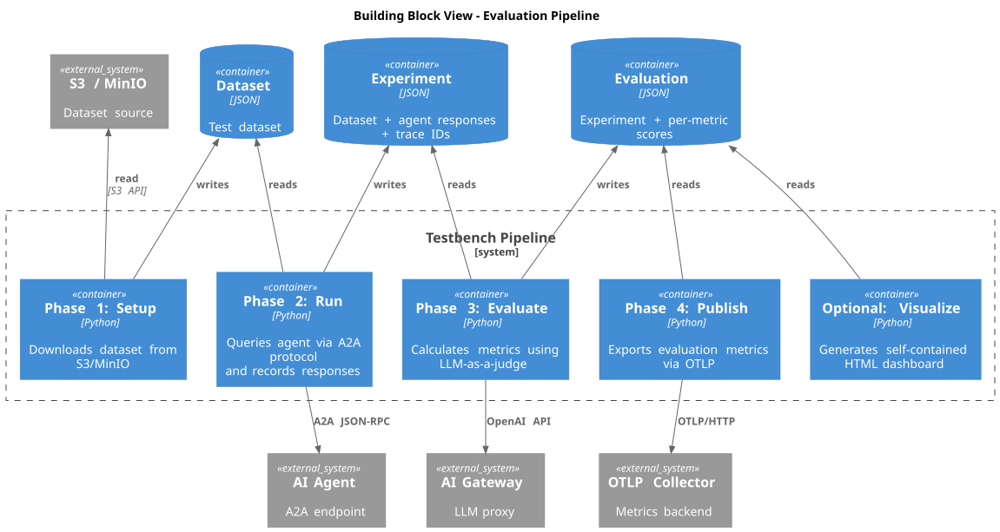

Building Block View
Pipeline Overview
The Testbench operates as a sequential 4-phase pipeline. Each phase reads input from the previous phase’s output via a shared data volume.

Phase 1: Setup
Purpose: Downloads a test dataset from S3/MinIO.
Processing:
-
Downloads the dataset file
-
Writes the output to the shared data volume
Phase 2: Run
Purpose: Executes test queries against an agent via the A2A protocol and records responses.
Processing:
-
Initializes OpenTelemetry tracing
-
Loads the test dataset
-
For each dataset entry:
-
Creates an OpenTelemetry span
-
Sends the query to the agent via A2A
-
Records the response and trace ID
-
Phase 3: Evaluate
Purpose: Calculates evaluation metrics using the LLM-as-a-judge approach.
Processing:
-
Loads the experiment file
-
Connects to the AI Gateway for LLM access
-
Evaluates each row asynchronously
Phase 4: Publish
Purpose: Publishes per-sample evaluation metrics to an OTLP-compatible backend.
Processing:
-
Loads the evaluation results
-
Creates an OTLP metric exporter for HTTP transport
-
For each sample and metric, creates a gauge observation with attributes:
-
name— metric type (e.g.,"faithfulness") -
workflow_name— test workflow identifier -
execution_id— Testkube execution ID -
execution_number— numeric execution counter -
trace_id— links to the trace from the Run phase -
sample_hash— unique sample identifier -
user_input_truncated— first 50 characters of user input
-
-
Flushes all metrics to ensure immediate export
Optional: Visualize
Purpose: Generates a self-contained HTML dashboard from evaluation results.
Features:
-
Summary cards — total samples, metrics count, token usage, cost
-
Workflow metadata header — workflow name, execution ID, execution number
-
Overall scores bar chart — horizontal bars showing mean score per metric
-
Metric distribution histograms — per-metric score distributions with min/max/mean/median statistics
-
Detailed results table — all samples with per-metric scores, searchable and color-coded
-
Multi-turn conversation visualization — chat-bubble layout with color-coded message types
-
Self-contained HTML — works offline as a single file